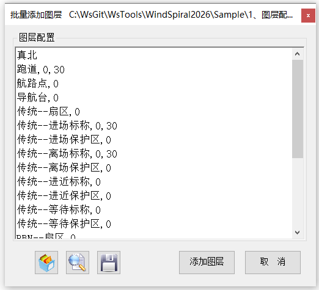

功能简介
【批量添加图层】按文本清单批量创建多个图层，并可为每个图层指定颜色编号与线宽，快速建立符合规范的图层体系。
界面预览

界面元素
| 控件 | 说明 |
|---|---|
| 图层配置 | 多行文本框，每行一个图层，格式为“名称，颜色编号，线宽”。 |
| 加载（按钮） | 载入图层配置文件。 |
| 查询（按钮） | 查询当前文件的图层设置。 |
| 保存（按钮） | 将当前图层配置数据保存到文本文件中。 |
| 添加图层（按钮） | 解析清单并批量创建图层，完成后提示“添加成功”。 |
| 取消（按钮） | 关闭窗口。 |
数据格式
每行一个图层，字段用逗号分隔（支持中文逗号“，”）。颜色编号、线宽可省略：
名称，颜色编号，线宽
跑道，1，50
真北，2
障碍物- 只写“名称”：按默认颜色 / 线宽创建图层。
- “名称，颜色编号”：指定颜色（ACI 颜色号）。
- “名称，颜色编号，线宽”：同时指定线宽。
操作步骤
- 命令行输入
Y91_CreateLayer打开窗口。 - 在“图层配置”中按行填写图层清单（或点【加载】套用模板）。
- 点击【添加图层】批量创建，完成后会提示“添加成功”。
格式校验：字段多于 3 个或格式有误的行会提示“数据格式有误，添加失败”，该行不创建。